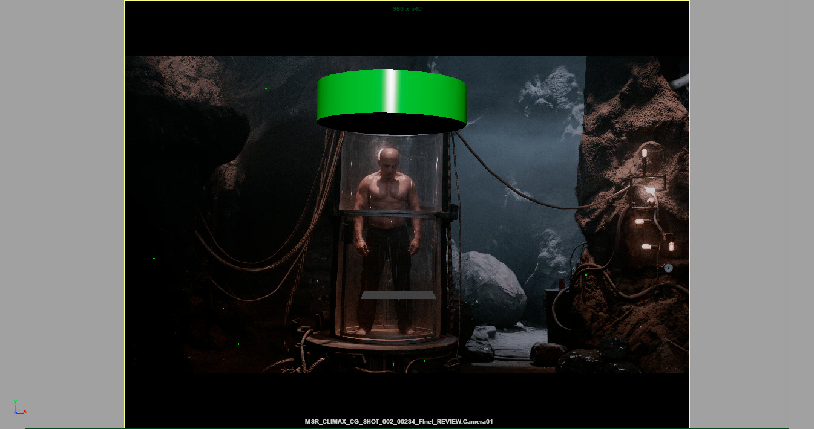

[PLT 00234] RMS 0.28px
Camera Tracking & Layout
Shot 002: Head Camera Solve & Line-up
Sub-pixel camera solve calibrated against survey coordinates. Maya proxy geometry matched for green-screen set extension.